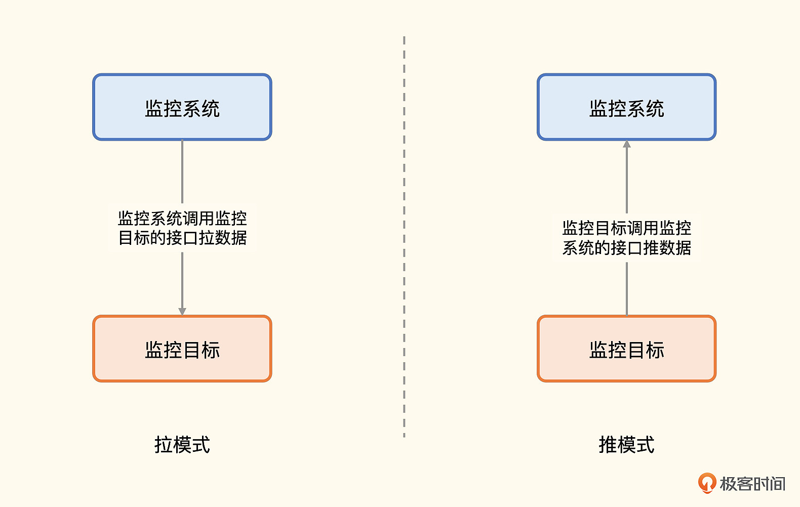

Prometheus中有哪些关键设计？
Prometheus的关键设计
-
- 指标定义规范
- 数据传输规范
- remote storage 接口规范
-
推拉模式
-
推模式
- 对网络 ACL 友好比较简单，
- 适合没有接入注册中心的应用埋点监控
- 适合短周期任务、后台离线任务
-
- 解耦，更可控
- 适合监控中间件数据库类
- 适合接入了注册中心的应用埋点监控
-
-
-
基于配置文件
- 简单直观
- 建议配合配置管理工具一起使用
-
基于 Kubernetes
- 直接支持 Kubernetes 体系监控，丝滑
-
基于公有云 API
- 动态发现云账号下的 RDS、KV 等资源
-
基于 Consul 等注册中心
- 通常用于做 HTTP、PING 监控的目标联动
-
-
- 简单直观，适合 IaC 方式的管理
- 多团队协作，公司级自助操作略显麻烦
-
- 用于做指标过滤
- 用于指标二次计算，不再需要采集侧穷举所有计算场景
标准先行，注重生态
Prometheus 最重要的规范就是指标命名方式，数据格式简单易读，它用标签集来标识指标。有些监控系统会把一些特殊的字段单独提出来，最典型的就是 hostname 字段，这种做法在一些特定场景会显得更有效。但是显然， 统一的标签集表达方式是最通用、最灵活的。
虽然标签集很灵活，但是在实际落地时，我强烈建议你在公司推行一个标签定义规范，标签Key不能随便起名，该有的标签也不能缺失。既减少了理解成本，也保证了数据的规整完备，便于后续做数据分析。比如，对于应用层面的监控，可以要求必须具备这几个信息。
- 指标名称 metric
Prometheus内置建立的规范就是叫metric（即__name__）。如果是Counter类型，单调递增的值，指标名称以_total结尾。
- 服务名称 service
服务名称service要全局唯一，比如 n9e-webapi，p8s-alertmanager，一般是系统名称加上模块名称，组成最终的服务名称。如果公司比较大，就需要一个全局的服务目录做参考，否则不同的团队可能会起相同的名称，我们可以考虑使用 Git 里的 GroupName + RepoName。系统名称最好也单独做成一个标签，比如 system=n9e system=p8s。
- 实例名称 instance
一个服务一般会部署多个实例，可以直接使用机器名或Pod名作为instance名称。如果在物理机部署，有实例混部的情况，就要把端口加上，比如实例一是10.1.2.3:3306，实例二是 10.1.2.3:3307。
- 服务类型 job
比如所有的MySQL的监控数据，都统一打上 job=mysql 的标签，Redis的监控数据，就打上 job=redis 的标签。如果是自研的模块，也可以使用 webserver backend frontend 这种分类方式。
- 地域可用区 zone
把地域信息放到标签里，有个巨大的好处，比如某个 zone 出问题了，就比较容易看出来，带有某个特定的zone的指标数据异常，快速执行切流止损即可。有了 zone 的信息，region就可有可无了，zone的前缀一般就是region。
- 集群名称 cluster
有的时候一个可用区会部署多个集群，特别是一些中间件，比如 ElasticSearch，给每个重要的业务单独部署一个集群，一个大公司可能有几百套 ElasticSearch 集群，几千套ZooKeeper集群。
- 环境类型 env
环境类型 env 用来标识是生产环境还是测试环境。当然了，如果监控系统不复用（推荐这么做），生产用生产的监控系统，测试用测试的监控系统，就无需这个标签了。
指标的数据格式和传输协议制定好之后，各种Exporter、各种支持 Remote Read/Write 的后端存储就可以接入进来了，而这些 Exporter、存储的丰富和繁荣，又反向推动了 Prometheus 的流行，形成正向循环。
主要使用拉模式，解耦
Prometheus主要使用拉模式获取指标，辅以推模式（Pushgateway的职能）。很多监控系统都是推模式，比如 Datadog、Open-Falcon、Telegraf+InfluxDB组合。推拉两种方式，在监控领域讨论也比较多，它们各有优缺点和适用场景。

拉模式有个最重要的优势，就是解耦。你可能之前听很多人说过这个优势，但你未必能体会到解耦解在了哪里，我举一个例子你就懂了。
对于各类中间件，特别是非常基础的那些，很大概率是先于监控系统部署的。如果是拉模式，部署好监控系统之后，再来调用中间件的接口获取数据即可。如果是推模式，就需要在中间件里重新配置监控数据上报地址，然后重启中间件，这个代价就太高了。
但是拉模式需要有很好的服务发现机制，如果只有少量的几个目标要采集，怎么搞都可以，但是有几百个的时候，手工配置就比较麻烦了。所以Prometheus支持各种服务发现机制，尤其是基于Kubernetes的服务发现机制，是最常见的。
如果服务没有部署在Kubernetes中，而是部署在传统物理机或虚拟机上，这个时候就需要使用Consul之类的服务发现机制。但如果在监控体系建设之前，服务没有接入注册中心，为了满足监控需求而接入注册中心，用户会觉得成本太高。此时推模式就有了用武之地，这就是很多公司的自研服务都使用推模式发送监控数据的原因。
所以结论就来了：中间件类使用拉模式，自研的服务使用推模式，自研的服务如果都接入了注册中心，则也可以使用拉模式。
当然，推拉的选择还有一个点比较关键，就是网络通路问题，特别是网络ACL限制比较严格的环境，很多都是可出不可进，比如典型的NAT出网，这种情况下推模式的适配性更好，也就是说对ACL更友好一些。另一个关键点是短周期任务或批处理任务，通常不太可能监听HTTP端口，这种大概率也是推模式。
推拉模式的选择，还有一些其他影响因素，比如推模式服务端通常比较容易处理，因为数据接收是无状态的。但是拉模式在数据量大的时候要考虑分片的问题，还有就是失联告警问题，拉模式很容易感知到目标失联。推模式就比较复杂了，需要对数据缺失做告警，比如 Prometheus 的absent 函数，absent 函数需要把指标的每个标签都写全，才能达到预期效果。而指标数量何止千万，几乎不可能完成。
最后就是可控性问题，拉模式，监控系统是主动的一方，可以控制频率；推模式，客户端是主动的一方，如果代码写“挫”了，就会给监控系统造成很大压力。
前面我们提到拉模式需要有很好的服务发现机制，Prometheus 采取的就是拉模式，因此它对监控目标动态发现机制的苛求度很高。
监控目标动态发现机制
监控目标动态发现机制，这个问题其实很早就有，老一些的监控系统，比如Zabbix，是资产管理式，要监控的目标都需要在服务端注册、配置。这种方式在监控目标偏静态的场景还是比较好用的，但是云原生之后，基础设施动态化，监控目标的创建、销毁都比较频繁，就需要有一个更自动化的机制来获取监控目标列表。
Prometheus内置了多种服务发现机制，最常见的有四种。
- 基于配置文件的发现机制：这种方式看起来很低端，其实非常常用，因为可以配合配置管理工具一起使用，非常方便。使用配置管理工具批量更新配置，然后让监控系统重新加载一下就可以了，比较丝滑。
- 基于Kubernetes的发现机制：Kubernetes中有很多元信息，通过调用 kube-apiserver，可以轻易拿到 Pod、Node、Endpoint 等列表，Prometheus内置支持了Kubernetes的服务发现机制，让这个过程变得更简单，Prometheus基本成为了Kubernetes监控的标配。
- 基于公有云API的发现机制：比如要监控公有云上所有的RDS服务，一条一条配置比较麻烦，这个时候就可以基于公有云的OpenAPI做一个服务发现机制，自动拉取相关账号下所有RDS实例列表，大幅降低管理成本。
- 基于注册中心的发现机制：社区里最为常用的是Consul，典型场景是PING监控和HTTP监控，把所有目标注册到Consul中，然后读取Consul生成监控对象列表即可。
这就是Prometheus支持的几个主要的服务发现机制，当然还有其他方式，但用得没那么多，这里就先不介绍了。
基于配置文件的管理方式
Prometheus的告警规则管理、记录规则管理、抓取配置管理与发送策略管理，全部是基于配置文件的，这虽然不是一个关键设计，但确实是一个非常有特色的设计，我们也简单聊一下。
这个方式有两个好处，一个是简单，简单到令人发指，很多监控系统都是使用数据库来存储各类配置的，Prometheus则直接使用Yaml文件，非常直观。第二个好处就是便于自动化，配合配置管理工具、Git、Kubernetes等，与 Infrastructure as Code 的管理风潮非常契合。
当然，这样管理也有一个问题，就是不便于公司级协作，比如公司有30条业务线，数百个服务，上千个研发，大家都来管理一套配置，会非常混乱。所以很多公司的做法是由一个专职的运维团队来管理这套配置，其他业务线研发有需求了就给这个运维团队提工单，这种做法也凑合能用，只是苦了这个运维团队，团队成员比较容易产生焦躁情绪。
另外，Prometheus 默认是单机时序存储，容量有上限，基于配置管理的问题和容量问题，我个人非常建议那些推行DevOps的团队来使用，而且是每个团队自己有一套单独的Prometheus，互不干扰，正所谓“You build it. You Run it. You monitor it. You own it.”
当然，这样也会带来问题，最典型的是数据孤岛问题，不过我们可以把各个Prometheus中的核心关键指标抽取到一个统一的地方来呈现，比如使用Prometheus联邦机制， 只共享核心指标，其余指标不需要抽取到中心，自己团队消化就好。
灵活的查询语言
PromQL（Prometheus Query Language）是 Prometheus 的查询语言，非常灵活。这也是 Prometheus 的一个关键设计。
很多老一代监控系统都只能对数据做简单过滤判断阈值，没有QL的支持。当我们想要某个数据却发现没有的时候，就天然倾向于在采集侧处理，但是 **采集侧是无法穷举所有计算场景的，采集侧应该采集原始数据，后续的二次计算还是应该放到中心来搞定**。
比如机器的内存指标，我们可以从 cat /proc/meminfo 中看到很多内存相关的监控指标，采集器可以轻易拿到MemAvailable和MemTotal这样的字段，但是操作系统不会直接暴露内存可用率，此时就需要使用PromQL：MemAvailable / MemTotal * 100 做二次计算了。因为这个场景很常见，有的采集器就直接自动做了计算，输出 mem_available_percent 这样的指标。但是还有很多场景是不好穷举的，下面我们再举个例子。
有一些监控数据的采集，是完全由用户配置出来的，比如SNMP数据采集，采集哪些OID是用户配置的；JMX数据采集，采集哪些MBean、哪些Pattern也是用户配置的。监控采集器压根就不知道这些数据的具体语义，只有配置采集规则的人知道，这种情况更不可能自动计算，采集器只能采集原始数据，如果有二次计算的需求，最好是设计到服务端，让服务端来做。
PromQL为二次计算提供了能力支持，多个指标的关联计算、多条件联合告警，都可以用 PromQL来实现，作为现代监控系统，Query Language已经是必备要求了。